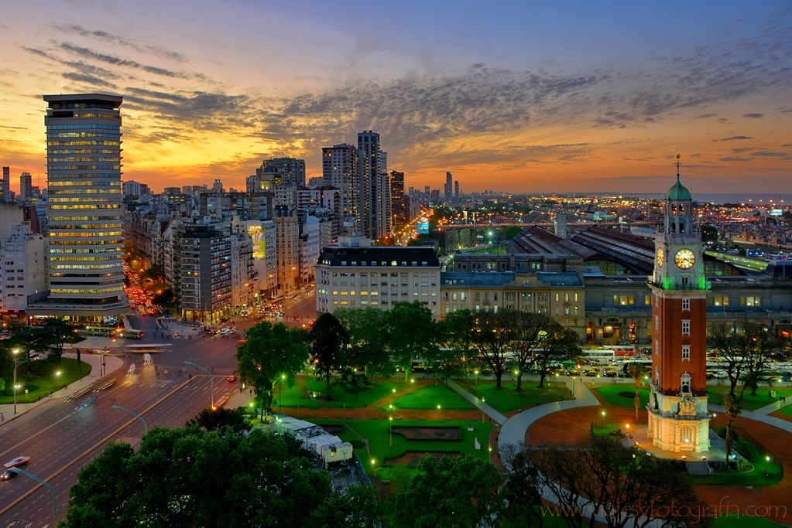

Espacios Verdes y Parques en Buenos Aires
A pesar de ser una de las metrópolis más densamente pobladas de América Latina, Buenos Aires cuenta con una extensa red de espacios verdes que ofrece un respiro en medio del bullicio urbano. Los parques, plazas y reservas naturales de la ciudad no solo proporcionan áreas de esparcimiento para los porteños, sino que también se convierten en escenarios ideales para actividades deportivas, eventos culturales y encuentros sociales. Entre los más emblemáticos se encuentran los Bosques de Palermo, la Reserva Ecológica y el Parque Tres de Febrero.
Los Bosques de Palermo, oficialmente conocidos como Parque Tres de Febrero, son un verdadero pulmón verde en el centro de la ciudad. Con más de 400 hectáreas de jardines, lagos y senderos, este parque es el destino favorito de quienes buscan hacer deporte, pasear en bote o simplemente relajarse al aire libre. Además, alberga espacios icónicos como el Rosedal, un jardín con más de 1.000 variedades de rosas que, cada primavera, atrae a miles de visitantes con sus colores y fragancias.
Otro espacio verde de gran relevancia es la Reserva Ecológica Costanera Sur. Situada a orillas del Río de la Plata, esta reserva es un refugio natural de 350 hectáreas que alberga una gran diversidad de flora y fauna autóctona. Con senderos que atraviesan lagunas, pastizales y miradores, la Reserva Ecológica es un lugar ideal para avistamiento de aves, caminatas y recorridos en bicicleta. Además, ofrece una vista panorámica del skyline porteño, creando un contraste único entre la naturaleza y la modernidad.
Por último, Buenos Aires cuenta con numerosos parques y plazas distribuidos por toda la ciudad. Espacios como el Parque Lezama, con sus antiguas escalinatas y monumentos históricos, o el Jardín Botánico, que alberga especies de plantas de distintos continentes, permiten a los porteños disfrutar de la naturaleza sin alejarse del centro urbano. Estos lugares no solo son puntos de encuentro y recreación, sino también escenarios para ferias artesanales, clases de yoga, conciertos al aire libre y actividades culturales que fomentan el sentido de comunidad y pertenencia.
